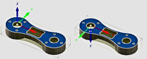

<div id="view_orientation_flipZ"><p>Inverse l'axe Z de 180 degrés.</p>
<table class="tipTable" cellspacing="10">
<tr>
<td><center></center></td>
</tr><tr>
<td><center><p><b>Inverser la direction de l'axe de 180 degrés</b></p></center></td>
</tr></table>
</div>